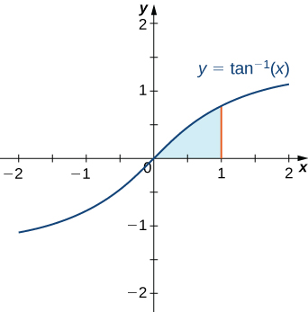
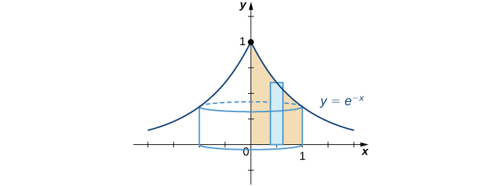

By now we have a fairly thorough procedure for how to evaluate many basic integrals. However, although we can integrate by using the substitution, something as simple looking as defies us. Many students want to know whether there is a product rule for integration. There isn’t, but there is a technique based on the product rule for differentiation that allows us to exchange one integral for another. We call this technique integration by parts.
The Integration-by-Parts Formula
If, then by using the product rule, we obtain Although at first it may seem counterproductive, let’s now integrate both sides of this equation:
This gives us
Now we solve for
By making the substitutions and which in turn make and we have the more compact form
Integration by Parts
Let and be functions with continuous derivatives. Then, the integration-by-parts formula for the integral involving these two functions is:
The advantage of using the integration-by-parts formula is that we can use it to exchange one integral for another, possibly easier, integral. The following example illustrates its use.
Using Integration by Parts
Use integration by parts with and to evaluate
By choosing we have Since we get It is handy to keep track of these values as follows:
Applying the integration-by-parts formula results in
Analysis
At this point, there are probably a few items that need clarification. First of all, you may be curious about what would have happened if we had chosen and If we had done so, then we would have and Thus, after applying integration by parts, we have Unfortunately, with the new integral, we are in no better position than before. It is important to keep in mind that when we apply integration by parts, we may need to try several choices for and before finding a choice that works.
Second, you may wonder why, when we find we do not use To see that it makes no difference, we can rework the problem using
As you can see, it makes no difference in the final solution.
Last, we can check to make sure that our antiderivative is correct by differentiating
Therefore, the antiderivative checks out.
Watch this video and visit this website for examples of integration by parts.
Evaluate using the integration-by-parts formula with and
Hint
Find and and use the previous example as a guide.
The natural question to ask at this point is: How do we know how to choose and Sometimes it is a matter of trial and error; however, the acronym LIATE can often help to take some of the guesswork out of our choices. This acronym stands for Logarithmic Functions, Inverse Trigonometric Functions, Algebraic Functions, Trigonometric Functions, and Exponential Functions. This mnemonic serves as an aid in determining an appropriate choice for
The type of function in the integral that appears first in the list should be our first choice of For example, if an integral contains a logarithmic function and an algebraic function, we should choose to be the logarithmic function, because L comes before A in LIATE. The integral in has a trigonometric function and an algebraic function Because A comes before T in LIATE, we chose to be the algebraic function. When we have chosen is selected to be the remaining part of the function to be integrated, together with
Why does this mnemonic work? Remember that whatever we pick to be must be something we can integrate. Since we do not have integration formulas that allow us to integrate simple logarithmic functions and inverse trigonometric functions, it makes sense that they should not be chosen as values for Consequently, they should be at the head of the list as choices for Thus, we put LI at the beginning of the mnemonic. (We could just as easily have started with IL, since these two types of functions won’t appear together in an integration-by-parts problem.) The exponential and trigonometric functions are at the end of our list because they are fairly easy to integrate and make good choices for Thus, we have TE at the end of our mnemonic. (We could just as easily have used ET at the end, since when these types of functions appear together it usually doesn’t really matter which one is and which one is Algebraic functions are generally easy both to integrate and to differentiate, and they come in the middle of the mnemonic.
Using Integration by Parts
Evaluate
Begin by rewriting the integral:
Since this integral contains the algebraic function and the logarithmic function choose since L comes before A in LIATE. After we have chosen we must choose
Next, since we have Also, Summarizing,
Substituting into the integration-by-parts formula () gives
Evaluate
Hint
Use and
In some cases, as in the next two examples, it may be necessary to apply integration by parts more than once.
Applying Integration by Parts More Than Once
Evaluate
Using LIATE, choose and Thus, and Therefore,
Substituting into produces
We still cannot integrate directly, but the integral now has a lower power on We can evaluate this new integral by using integration by parts again. To do this, choose and Thus, and Now we have
Substituting back into the previous equation yields
After evaluating the last integral and simplifying, we obtain
Applying Integration by Parts When LIATE Doesn’t Quite Work
Evaluate
If we use a strict interpretation of the mnemonic LIATE to make our choice of we end up with and Unfortunately, this choice won’t work because we are unable to evaluate However, since we can evaluate we can try choosing and With these choices we have
Thus, we obtain
Applying Integration by Parts More Than Once
Evaluate
This integral appears to have only one function—namely, —however, we can always use the constant function 1 as the other function. In this example, let’s choose and (The decision to use is easy. We can’t choose because if we could integrate it, we wouldn’t be using integration by parts in the first place!) Consequently, and After applying integration by parts to the integral and simplifying, we have
Unfortunately, this process leaves us with a new integral that is very similar to the original. However, let’s see what happens when we apply integration by parts again. This time let’s choose and making and Substituting, we have
After simplifying, we obtain
The last integral is now the same as the original. It may seem that we have simply gone in a circle, but now we can actually evaluate the integral. To see how to do this more clearly, substitute Thus, the equation becomes
First, add to both sides of the equation to obtain
Next, divide by 2:
Substituting again, we have
From this we see that is an antiderivative of For the most general antiderivative, add
Analysis
If this method feels a little strange at first, we can check the answer by differentiation:
Evaluate
Hint
This is similar to .
Integration by Parts for Definite Integrals
Now that we have used integration by parts successfully to evaluate indefinite integrals, we turn our attention to definite integrals. The integration technique is really the same, only we add a step to evaluate the integral at the upper and lower limits of integration.
Integration by Parts for Definite Integrals
Let and be functions with continuous derivatives on Then
Finding the Area of a Region
Find the area of the region bounded above by the graph of and below by the -axis over the interval
This region is shown in . To find the area, we must evaluate

To find the area of the shaded region, we have to use integration by parts.
For this integral, let’s choose and thereby making and After applying the integration-by-parts formula () we obtain
Use u-substitution to obtain
Thus,
At this point it might not be a bad idea to do a “reality check” on the reasonableness of our solution. Since and from we expect our area to be slightly less than 0.5, this solution appears to be reasonable.
Finding a Volume of Revolution
Find the volume of the solid obtained by revolving the region bounded by the graph of the x-axis, the y-axis, and the line about the y-axis.
The best option to solving this problem is to use the shell method. Begin by sketching the region to be revolved, along with a typical rectangle (see the following graph).

We can use the shell method to find a volume of revolution.
To find the volume using shells, we must evaluate To do this, let and These choices lead to and Substituting into , we obtain
Analysis
Again, it is a good idea to check the reasonableness of our solution. We observe that the solid has a volume slightly less than that of a cylinder of radius and height of added to the volume of a cone of base radius and height of Consequently, the solid should have a volume a bit less than
Since we see that our calculated volume is reasonable.
Evaluate
Hint
Use with and
Key Concepts
The integration-by-parts formula allows the exchange of one integral for another, possibly easier, integral.
Integration by parts applies to both definite and indefinite integrals.
Key Equations
Integration by parts formula
Integration by parts for definite integrals
In using the technique of integration by parts, you must carefully choose which expression is u. For each of the following problems, use the guidelines in this section to choose u. Do not evaluate the integrals.
Find the integral by using the simplest method. Not all problems require integration by parts.
(Hint: is equivalent to
Compute the definite integrals. Use a graphing utility to confirm your answers.
(Express the answer in exact form.)
2
(Express the answer in exact form.)
(Express the answer in exact form.)
(Express the answer in exact form.)
(Express the answer using five significant digits.)
Evaluate
Derive the following formulas using the technique of integration by parts. Assume that n is a positive integer. These formulas are called reduction formulas because the exponent in the x term has been reduced by one in each case. The second integral is simpler than the original integral.
Answers vary
Integrate using two methods:
Using parts, letting
Substitution, letting
a. b.
State whether you would use integration by parts to evaluate the integral. If so, identify u and dv. If not, describe the technique used to perform the integration without actually doing the problem.
Do not use integration by parts. Choose u to be and the integral is of the form
Do not use integration by parts. Let and the integral can be put into the form
Do not use integration by parts. Choose u to be and the integral can be put into the form
Sketch the region bounded above by the curve, the x-axis, and and find the area of the region. Provide the exact form or round answers to the number of places indicated.
(Approximate answer to four decimal places.)
(Approximate answer to five decimal places.)
The area under graph is 0.39535.
Find the volume generated by rotating the region bounded by the given curves about the specified line. Express the answers in exact form or approximate to the number of decimal places indicated.
about the y-axis (Express the answer in exact form.)
about (Express the answer in exact form.)
A particle moving along a straight line has a velocity of after t sec. How far does it travel in the first 2 sec? (Assume the units are in feet and express the answer in exact form.)
Find the area under the graph of from (Round the answer to two significant digits.)
2.05
Find the area between and the x-axis from to (Express the answer in exact form.)
Find the area of the region enclosed by the curve and the x-axis for
(Express the answer in exact form.)
Find the volume of the solid generated by revolving the region bounded by the curve the x-axis, and the vertical line about the x-axis. (Express the answer in exact form.)
Find the volume of the solid generated by revolving the region bounded by the curve and the x-axis, about the x-axis. (Express the answer in exact form.)
Find the volume of the solid generated by revolving the region in the first quadrant bounded by and the x-axis, from to about the y-axis. (Express the answer in exact form.)
Key terms
integration by parts a technique of integration that allows the exchange of one integral for another using the formula